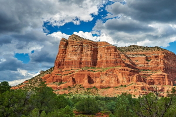

Sedona, Arizona is a popular tourist destination known for its world-renowned sandstone rock formations and its vibrant art scene. The relaxed vibe and quaint, but stylish, atmosphere of the city offers a little something for everyone. Does the scenery feel familiar? Its likely because the breath-taking and rugged landscapes have provided the backdrop to many famous Western movies! It is an outdoor lover’s paradise with ample hiking, biking, rafting, golfing, and climbing opportunities. The picturesque scenery, serenity and enchantment of Sedona has made it a spiritual destination for many visitors.
Sedona has a lot to offer, but most notably is the presence of "vortexes" thought to be swirling centers of energy that are conductive to healing, meditation and self-exploration. Visitors travel from across the world to experience the cosmic forces that are said to radiate from the red-rock formations. While all of Sedona is a vortex, there are six locations where the healing forces are thought to be the strongest, with each radiating a different type of energy. Those who visit the vortexes to meditate and find healing often leave feeling inspired, uplifted, and recharged. Even if you are not a believer in comic forces, there is no doubt that you will feel connected to nature after visiting these picturesque sites.
In addition to the vortex locations, there are several other natural landmarks that are worth a mention. Devil's Bridge is a popular photo-op location famous for its large natural arching sandstone bridge. If you are looking for a place to cool off from the desert heat, West Fork Trail, Seven Sacred Pools, and Oak Creek Canyon all provide access to water for wading.
Sedona is surrounded by two State Parks, Slide Rock State Park to the north and Red Rock State Park to the south-west. The parks aim to preserve the natural landscape, provide education to visitors, and promote safe and environmentally friendly recreational opportunities.
Click on the icons in the interactive map below to read a description about each landmark and view a photo!
Sedona is a great base camp location for day-trip adventures. With ample hiking trails, historical sites, and adventure tour packages available located within driving distance from the city center, you are sure to find something fun for the whole family!
Wondering where you can travel for a day trip? Check out the isochrone maps below that show areas nearby within 100 km driving distance and within 1 hour travel time from downtown Sedona. If you are looking for a shorter trip, select the legend to highlight areas reachable within specific distances or times. All locations are easily accessible for day use, with plenty of time to return for an evening spent exploring Sedona's entertainment options.
In addition to the hiking and outdoor activities available in the area, Sedona also has a quaint "Main Street" which features cafes, restaurants, spas, art exhibits, tourist companies, and museums. The downtown area is host to many free community events throughout the year. There is ample free parking available, however during festivals these spaces can fill up quickly!
The buildings on Main Street are designed to mimic the surrounding geological features and blend in with the landscape. Evidence of Sedona's large artist population can be seen by the number of public art installations on Main Street including sculptures, music, and murals.
Experience Sedona's humming downtown, which is backdropped by scenic red-rock mesas, from the comfort of your home with the Google Street View map inset below.